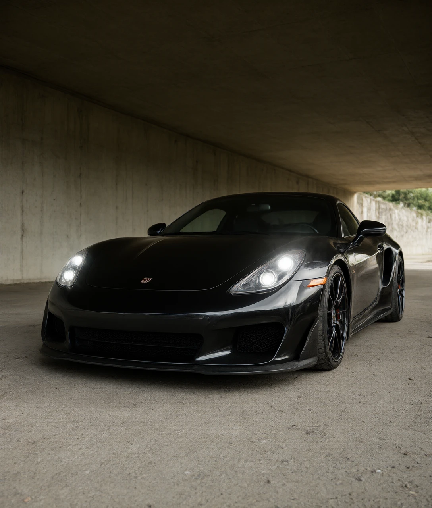
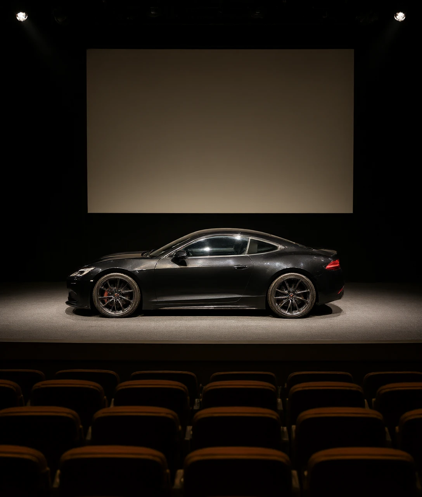
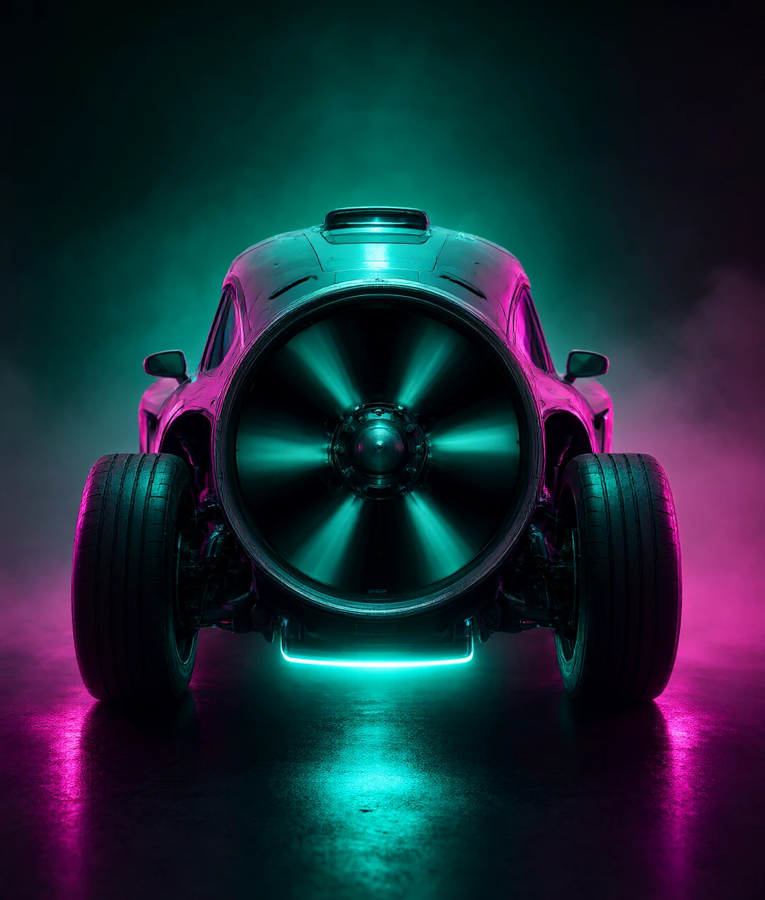
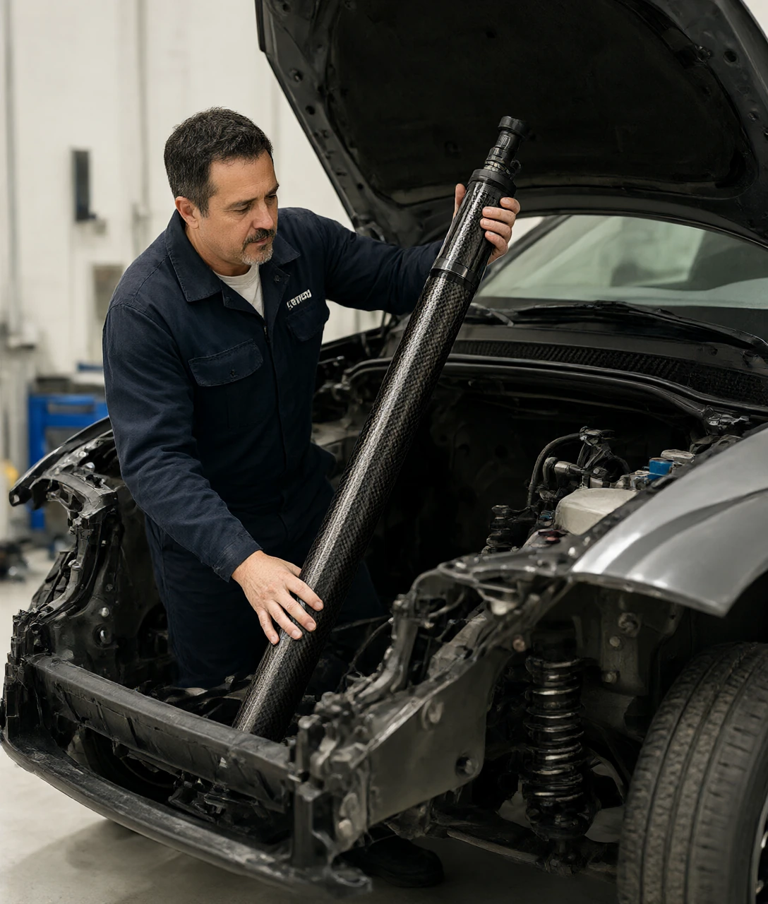

2017 年 11 月那场发布会上，一台概念跑车被承诺了两件事：压住地面，和离开地面

2017 年 11 月 16 日，特斯拉在加州霍桑发布第二代 Roadster 原型车。
现场给的数字有三个：0 到 100 公里每小时 1.9 秒。
续航约 1000 公里，极速超过 400 公里每小时。
同一场活动里，还提到一个选装包，代号 SpaceX。
内容是用冷气推进器，替换车尾的两个座椅。
冷气推进器不是新发明。航天器用它做姿态微调，已经几十年。
它喷的是压缩空气。不燃烧，也不点火。
承诺里最抓人的一句，是这台车会「短暂离地」。
注意这句话没有量化指标。没有高度，没有持续时间，也没有测试视频。
所以先把问题框住：想让车贴地，和想让车离地，用的是两套物理。
这两套物理还互相打架。好比一个人同时答应你两件相反的事：站定不动，又跳起来。
那「压住地面」的力，到底从哪儿来？

很多人把它想成吸盘。好像车底有个大吸盘，把车吸住。
不是。吸盘靠内外压差，把物体压向表面。
车底这套装置，做的是同一件事：风扇把车底的空气抽走。
车底气压降低，车顶上方还是正常大气压。上下压差，就把车按向地面。
这个力有多大？可以算。压差乘车底面积，就是下压力。
假设车底投影面积 4 平方米，压差相当于每平方米 200 公斤。
下压力约 800 公斤。差不多是车身自重的一半。
要把车压在隧道天花板上，下压力必须超过整车重量。
一台两吨的车，需要压差到每平方米 500 公斤以上。
这在工程上不是不可能。但风扇的功率会非常恐怖。
公式的人话版：力等于压差乘面积。
压差翻倍，下压力翻倍。面积翻倍，也翻倍。
F1 赛车的下压力，是在风洞里一次次测出来的。
同一台车换个尾翼角度，数字能差三成。
反过来看，这套方案低速时几乎没用。就像吸尘器，吸力要等一会儿才起来。
车一停，压差就消失了。
还有一个数字官方从未公布：风扇的功率，和它能造出多大压差。
外界只能用整车重量反推。这属于推测，误差可能很大。
压差的极限在哪？为什么不是想抽多低就多低？

离地这件事没那么多花样。就是动量守恒。
动量守恒就是：你往一个方向扔东西，自己会被反推。
好比站在滑板上扔球。球扔得越快，自己退得越快。
推进器每秒喷出多少气，气喷得多快，决定了推力。
喷得越快、喷得越多，推力越大。
压缩空气的问题，出在喷速上不去。
常温气瓶里的空气，经喷管加速后，出口速度也就每秒几百米。
火箭发动机是每秒 3000 米。差一个量级。
比冲也只有化学火箭的十分之一。比冲就是每公斤推进剂能产生多少冲量。
说白了：同样一罐气，能顶的时间差十倍。
它的优点不在效率，在响应。阀门一开，推力立刻到位，不用点火预热。
航天器看中的就是这一点。
姿态微调要的是毫秒级响应，和精确的小推力。不是大推力。
装到车上，它能给的是一瞬间的抬升和俯仰修正。
它给不了一个能持续飞行的动力系统。
那车想离地，靠的又是哪一套物理？
因为这是一台纯电车。
它没有油箱，没有氧化剂，也没有排气管。想产生推力，只能带一种自己就能喷出去的东西。
压缩空气是唯一同时满足三个条件的选项：安全、可重复、能用家用电补充。
代价写在账本上。
要让一台两吨的车离地 1 秒，假设需要 1.5 倍车重的推力，约 30 千牛。
按冷气推进器的典型效率估算，每秒要喷出十几公斤空气。
这相当于一个 300 升、压力 300 巴的碳纤维气瓶，全部存量。
这就是为什么宣传里说「短暂」，不说「飞行」。
还有一层矛盾：下压力套件和推进器，都想用同一份能量。
风扇耗电，气瓶占重量。两者叠加，续航就缩水。
发布会的 1000 公里续航，显然不包含这套选装包。
这种「满配宣传、空载测试」的做法，在汽车行业并不罕见。
上面这些估算，用的是公开的冷气推进器性能区间。取值本身有误差。
真实的选装包参数，至今没有一份公开的实验报告。
气瓶能装多少气，决定了能飞多久。这笔账怎么算？

从 2017 年发布到现在，已经九年。
量产时间从 2020 推到 2021，再推到 2023。之后官方不再给具体日期。
截至 2026 年 10 月，这台车仍没有量产交付。交付数据为零。
公开记录里能查到的，只有每隔一两年一次的「明年量产」表态。
就算造出来，还有法规这一关。
带推进器、能短暂离地的车，在任何国家的现行分类里都找不到归属。
它既不是汽车。汽车要求车轮着地驱动。
也不是航空器。航空器要拿适航认证。
这类新型载具的认证路径，目前还是一片空白。短期内看不到统一标准。
所以这台车真正的价值，可能不在产品本身。
它把两个平时分开讨论的东西放在了一起。就像一辆车同时装了涡轮和氮气加速，却只有一个油箱。
下压力让车更贴地，推进器让车离地。而两者都在吃同一块电池。
这个矛盾本身，就是给工程学习者的一道好题。
如果让你设计，你会把有限的能量分给哪一边？